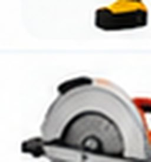

Devoluções e Atrasos
Acompanhe os empréstimos ativos, verifique os prazos e registre as devoluções.
3Empréstimos ativos
1Atrasado
2No prazo
| Ferramenta | Morador | Empréstimo | Devolução prevista | Situação | Ações |
|---|---|---|---|---|---|
Escada de alumínioE002 | Morador 002 | 25/10/2026 | 30/10/2026 | Atrasado | |
 Serra circularS004 | Morador 003 | 31/10/2026 | 08/11/2026 | No prazo | |
Trena de mediçãoT005 | Morador 001 | 30/10/2026 | 05/11/2026 | No prazo |
Mostrando 3 de 3 empréstimos ativos+ Novo empréstimo